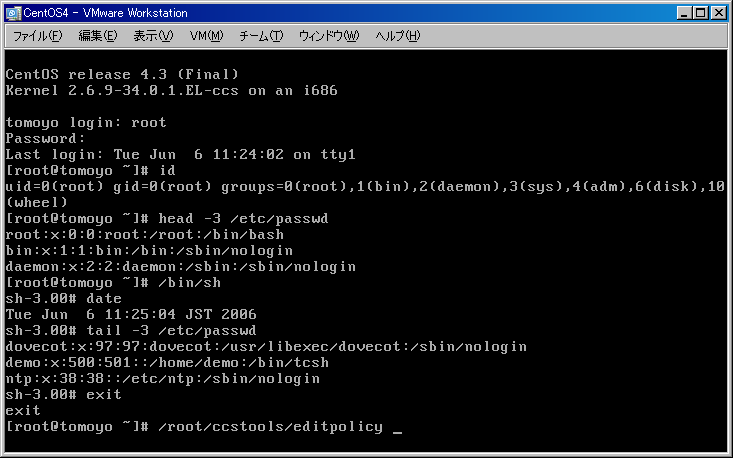
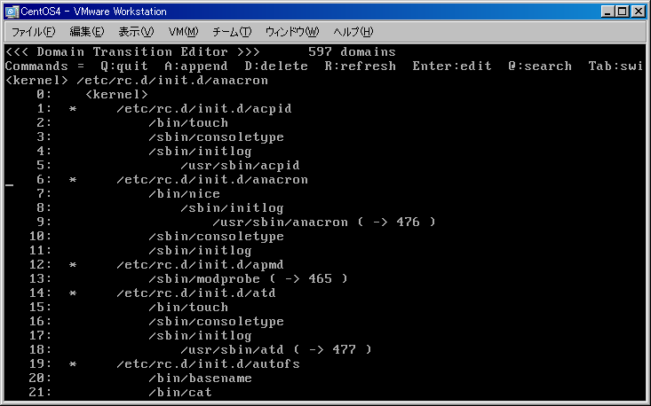
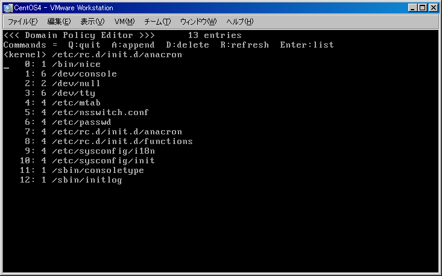
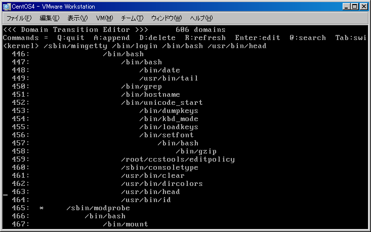
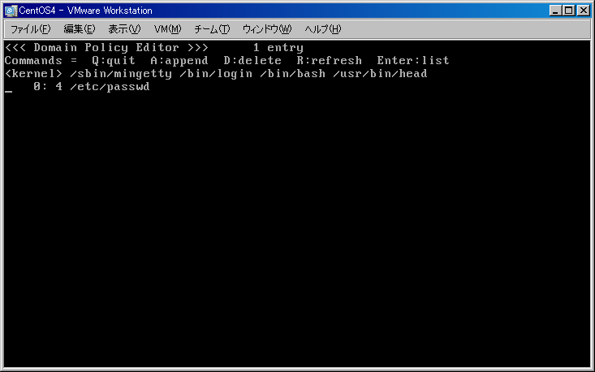

Info: Version 1.3 is available.
Last modified: $Date$
TOMOYO Linux には、 CUI で動作するポリシーエディタが付属しています。
TOMOYO Linux のポリシーはテキストファイルなので、 vi や emacs 等の任意のエディタを使用することも可能ですが、
/proc/ccs インタフェースに書き込もうとすると「バックアップファイルを作成できない」等のエラーメッセージが
多数表示されて使いにくいので、
ポリシーエディタを使用することを推奨します。
ポリシーエディタを使用するためには、ポリシーエディタのパス名（/root/ccstools/editpolicy）を /root/security/manager.txt に登録しておく必要があります。
プロンプトから /root/ccstools/editpolicy と入力すると、ポリシーエディタを実行することができます。

以下の画面は、RedHat Linux 9 を学習モードで起動した後、上記の操作を行った場合のポリシーです。
この画面には、ドメイン遷移の一覧が表示されており、Linuxが起動時にどのような動作を行っているかを解析することができます。

上の図からanacronを起動するスクリプトのに対して学習されたポリシーを確認してみましょう。
ポリシーエディタは「ドメイン遷移の表示」モードと「個別のドメインにおけるアクセス許可の表示」モードの2つのモードを持ちます。
起動直後は「ドメイン遷移の表示」モードとなっています。
アクセス許可の内容を知りたいドメインを選択して Enter を押すと、「個別のドメインにおけるアクセス許可の表示」モードになります。
矢印キーでカーソルを動かしてanacronの行を選択してから Enterキーを押すと、
次のような画面（anacronを起動するスクリプトに対するアクセス許可内容）が表示されます。

行番号の右隣の数字は、Linuxのパーミッション(rwx)を8進数にしたものです。
つまり4はr--(読み込み)、6はrw-(読み書き)、1は--x(実行)を意味します。
anacronを起動するスクリプトの実行に必要なアクセス許可がポリシーとして学習されているのがおわかりいただけると思います。
Enterキーを押して、再びドメイン遷移の表示モードに戻り、/sbin/mingettyのドメインを探してみてください。
画面を見ると、ログインするとmingettyから/bin/loginというプログラム経由で/bin/bashというシェルを起動していること、
/bin/shとして起動されたシェルも実体は/bin/bashであることがわかります。
また、先ほど実行したheadコマンドやdateコマンドが記録されていることもわかります。
では、カーソルを動かしてheadコマンドのドメインを選択して Enter キーを押してみましょう。


/sbin/mingettyから起動された/bin/loginから起動された/bin/bashから起動された/usr/bin/headが
/etc/passwdに対して読み込みアクセス許可を与えられていることがわかります。
同じコマンドであっても起動されたアクセス履歴により独立なドメインとして扱われますし、
同じドメインであっても対象毎に細かくアクセスが定義できることがおわかりいただけると思います。
しかもそれらが自動的に行われるので、TOMOYO Linuxは標準的なスキルを持つシステム管理者であれば誰でも使うことができます。
上記で説明したポリシーエディタの /root/ccstools/editpolicy は TOMOYO Linux カーネルで動作中に、カーネル内のポリシーを直接編集するためのエディタです。また、 Tab キーを押して画面を切り替えると、例外用ポリシーやシステム用ポリシーの編集も可能になります。